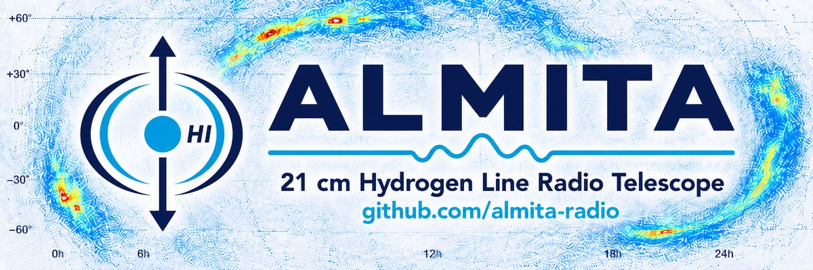

ALMITA — 21 cm Hydrogen Line Radio Telescope
Antenna Listening Mostly to Interference, Tentatively Astronomy
ALMITA is an open-source, amateur 21 cm neutral hydrogen (HI) radio telescope built in Chile. It listens to the 1420 MHz hydrogen line with a Raspberry Pi 5, RTL-SDR receivers and an INDI/OnStep equatorial mount, and turns raw radio data into traceable spectra, velocity cubes and maps. It is an experimental amateur radio astronomy project that works fully offline in the field.
Source code on GitHub Project README Project overview
From antenna to maps: OBSERVE → REDUCE → SCIENCE
OBSERVE → REDUCE (V1, frozen) → SCIENCE (V1, frozen) ↑ ALIGN · CALIBRATE · RFI_REF supporting systems
Plans sky mosaics, steps the equatorial mount and records raw I/Q with pointing and environment metadata in HDF5.
REDUCE V1 produces reproducible Level 1 spectra with masks, LSRK velocity, uncertainty and quality information.
SCIENCE V1 grids the spectra into an LSRK velocity cube and relative integrated maps, with uncertainty and coverage maps.
Receiver gain is characterised first, then kept fixed during a session, so observations can be compared.
An independent second SDR chain watches the local radio-frequency environment without touching the main capture.
Everything runs locally on a Raspberry Pi; no internet connection is needed to observe.
Hardware
Raspberry Pi 5, an RTL-SDR Blog V4 as the science receiver and a second RTL-SDR for RFI monitoring, a Nooelec Hydrogen LNA, a 1420 MHz feed on a modified grid reflector of about 90 × 60 cm, an equatorial mount with an OnStep controller and INDI, and temperature sensors. The hardware is accessible, experimental and repairable.
Scientific honesty
Current HI measurements are relative and instrumental: ALMITA does not claim an absolute calibration. The antenna beam used for mapping is an operator-configured, provisional model until a proper beam characterisation is done, and no astrophysical interpretation is automated. Results are those of an experimental amateur instrument, not of a professional observatory.
Why ALMITA exists
The project explores how far accessible hardware can be pushed toward careful, auditable amateur radio astronomy: raw data are preserved, uncertainties are explicit and claims are conservative.
Some parts are carefully engineered. Some parts are carefully attached with plastic cable ties. Both approaches have survived surprisingly well so far.